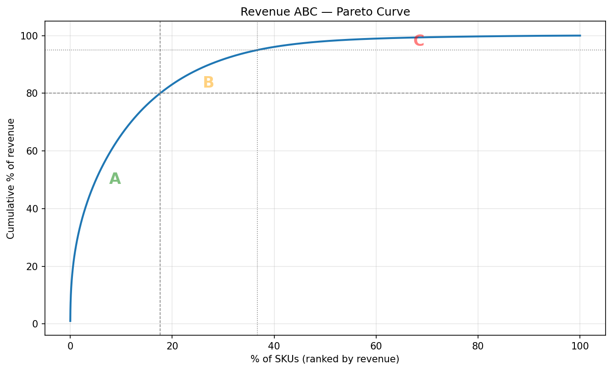

5.2 Optimisation de l’assortiment de produits
À propos de la version française
Cette page est une traduction par IA de la version anglaise de Marketing Science in Python. La version anglaise fait foi et prévaut en cas de divergence. Le code, les notebooks et le texte intégré aux images restent en anglais. Lire la version anglaise
La revue de catégorie est au calendrier : l’équipe chargée des planogrammes veut récupérer de l’espace en rayon, et le responsable de catégorie doit désigner les références à abandonner. Un produit peu performant ne se contente pas de prendre de la place : il immobilise des stocks, complique la chaîne d’approvisionnement et rend le rayon moins facile à parcourir pour les clients. Il faut décider quels produits supprimer, lesquels conserver et comment valider ces décisions avant de les généraliser à l’ensemble du réseau.
Ce chapitre applique cette démarche à deux années de transactions alimentaires : sélectionner les références de la longue traîne selon leur chiffre d’affaires, vérifier si la demande resterait dans le magasin, puis fournir une liste restreinte classée selon le risque associé au test de chaque référence.
Notebook d’accompagnement : sec5.2_assortment_optimization.ipynb reproduit la sélection ABC selon le chiffre d’affaires, la vérification de la substitution et l’attribution des actions sur le jeu de données alimentaires Dunnhumby Complete Journey.
Voir sur GitHub
Ce chapitre analyse le chiffre d’affaires, car le jeu de données public Dunnhumby Complete Journey ne comprend ni le coût des produits ni le coût des marchandises vendues. La même démarche s’applique à la marge brute ou à la marge sur coûts variables lorsque les équipes qui la mettent en production disposent des données de coût ; seule l’interprétation métier change, passant de la gestion du risque sur le chiffre d’affaires à l’optimisation de la marge.
Pourquoi il est difficile de supprimer des références
Les assortiments s’étoffent pour de bonnes raisons : les acheteurs veulent couvrir largement les besoins et les marques ne cessent de lancer des variantes. Un rayon plus épuré peut aussi faciliter les achats, même si les travaux sur la surcharge de choix ne s’accordent pas sur l’ampleur de cet effet (voir les Lectures complémentaires). L’asymétrie est organisationnelle : le coût d’une référence supplémentaire est diffus et passe facilement inaperçu, alors que le retrait d’un produit est une décision visible et parfois impopulaire. L’optimisation de l’assortiment est, en définitive, un processus de décision. Le rôle des données est de donner à l’équipe une raison défendable d’agir.
Une démarche d’optimisation de l’assortiment
La démarche répond successivement à deux questions :
- Sélection → ensemble de candidats. Quels produits contribuent peu au chiffre d’affaires et appartiennent à la longue traîne ?
- Vérification de la substitution → évaluation du risque. Pour chaque candidat, si nous le supprimons, la demande reste-t-elle dans notre magasin ?
Un candidat disposant de substituts plausibles parmi les produits plus performants présente moins de risques à tester. Sans ces substituts, testez avant d’agir. Aucune suppression n’est considérée comme sûre tant qu’un test sur des magasins appariés ne l’a pas validée.
Étape 1 : sélectionner les références selon le chiffre d’affaires
Avant de décider quoi retirer, il faut restreindre l’ensemble des références. Un magasin alimentaire peut proposer des milliers de produits, mais une petite fraction génère l’essentiel du chiffre d’affaires, tandis que chaque article de la longue traîne rapporte très peu. C’est dans cette longue traîne que se trouvent les candidats au retrait.
Les équipes de distribution utilisent souvent un classement de type Pareto appelé analyse ABC. Les produits sont triés selon leur contribution, généralement le chiffre d’affaires ou la marge, parfois les quantités vendues, puis répartis en trois classes.
- Articles A (les ~20 % en tête) : le petit nombre essentiel. Ils génèrent environ 80 % de l’indicateur retenu. Protégez-les, suivez-les et optimisez-les.
- Articles B (les ~30 % suivants) : le milieu important. Des contributeurs réguliers qui demandent moins d’attention.
- Articles C (les ~50 % restants) : la longue traîne. Faibles individuellement, encombrants collectivement. Des candidats à la rationalisation.
Les produits classés C constituent le point de départ de votre ensemble de candidats. Tous les articles C ne doivent pas être supprimés, mais tout produit dont vous envisagez le retrait doit provenir de ce groupe.
Dans le code, classez les références selon leur part cumulée du chiffre d’affaires, répartissez-les dans les classes A/B/C et retenez la longue traîne de classe C comme ensemble de candidats :
ranked = sku_summary.sort_values("revenue", ascending=False)["revenue"]
# Classify on the cumulative share *before* each SKU, so the SKU that crosses
# the 80% line still counts toward A (and a single dominant SKU stays A).
cum_before = (ranked.cumsum() / ranked.sum()).shift(fill_value=0)
sku_summary["abc_revenue"] = pd.cut(cum_before, bins=[0, 0.80, 0.95, 1.0],
labels=["A", "B", "C"], right=False)
# Candidate pool = C-rank by revenue (the long tail)
candidates = sku_summary[sku_summary["abc_revenue"] == "C"]La fonction complète, qui traite le filtrage des ventes nulles ou négatives et la répartition en classes en présence de NaN, se trouve dans le notebook d’accompagnement.
Figure 1 présente la courbe de Pareto du chiffre d’affaires d’environ 39 000 références alimentaires Dunnhumby (après exclusion de 38 références sans ventes). Le chiffre d’affaires est très concentré : moins de 20 % des références génèrent 80 % des ventes, tandis que le groupe de classe C (abc_revenue == "C") comprend 63 % des références, mais seulement 5 % du chiffre d’affaires. Cette longue traîne constitue l’ensemble de candidats. Son volume justifie à lui seul de l’examiner, pas de la défendre.

Le classement C selon le chiffre d’affaires fait entrer un produit dans l’ensemble de candidats, mais ne suffit pas à justifier son retrait. L’étape 2 détermine quels candidats peuvent être testés avec peu de risques et lesquels exigent davantage de prudence.
Étape 2 : vérifier la substitution, « La demande restera-t-elle ? »
Pour chaque candidat classé C, la question est la suivante : si nous le supprimons, les clients nous achèteront-ils autre chose ou quitteront-ils le magasin ?
Au sein d’une même sous-catégorie, des produits qui apparaissent rarement dans le même panier peuvent être des substituts. Les clients achètent généralement une marque de yaourt, pas trois. Nous utilisons la faible cooccurrence dans les paniers, mesurée par le lift, comme indicateur indirect de substitution :
\[\text{Lift}(A, B) = \frac{P(A \cap B)}{P(A) \times P(B)}\]
Un lift > 1 signifie que deux produits ont tendance à être achetés ensemble (compléments) ; un lift < 1 signifie qu’ils le sont rarement, ce qui, au sein d’une sous-catégorie, suggère qu’ils se substituent l’un à l’autre ; un lift = 0 (jamais dans le même panier) est le signal le plus fort. La contrainte d’appartenance à la même sous-catégorie compte : entre catégories, une faible cooccurrence signifie simplement que les produits répondent à des besoins différents (céréales et pâtes), pas qu’ils sont substituables.
Il s’agit d’un indicateur indirect, pas d’une preuve. Une faible cooccurrence peut aussi refléter des occasions d’achat ou des segments de clientèle différents.
Pour chaque candidat de classe C, la vérification parcourt les produits de sa sous-catégorie (en se limitant aux références de classe A/B selon le chiffre d’affaires, dont le volume est suffisant pour absorber la demande reportée) et signale ceux dont le lift est faible :
co_occur = len(cand_baskets & peer_baskets)
if co_occur == 0: # never bought together → strongest signal
subs.append({"substitute": peer_id, "lift": 0.0})
else:
lift = (co_occur / total_baskets) / (p_cand * p_peer)
if lift < lift_threshold: # low Lift within a sub-category → likely substitute
subs.append({"substitute": peer_id, "lift": round(lift, 3)})La fonction complète, qui traite le regroupement par sous-catégorie, l’ensemble de substituts de classe A/B selon le chiffre d’affaires et les garde-fous sur le nombre minimal de paniers, se trouve dans le notebook d’accompagnement.
Deux éléments peuvent renforcer l’analyse. Une élasticité-prix croisée positive, lorsqu’elle est disponible, étaye l’hypothèse de substitution. Lorsque les données de panier sont rares, par exemple pour les nouveaux produits ou les petits magasins, la similarité des attributs, comme la marque, la gamme de prix ou l’usage, peut constituer une solution de repli pratique.
Le résultat : une liste de candidats évalués
La longue traîne est trop vaste pour être évaluée intégralement ; le notebook évalue donc 150 références de classe C : les 100 achetées le plus souvent, auxquelles s’ajoutent les références C des mêmes sous-catégories, toutes présentes dans au moins 30 paniers sur les deux années. Une référence achetée une douzaine de fois ne permet de tirer aucun signal de substitution dans un sens ou dans l’autre. Les étapes 1 et 2 attribuent ensuite l’une de trois actions. Table 1 présente un candidat réel par action (les libellés des sous-catégories ont été simplifiés pour faciliter la lecture) :
| Candidat (sous-catégorie) | Chiffre d’affaires, 2 ans | Paniers | Substitut évident ? | Halo ? | Action |
|---|---|---|---|---|---|
| Aliment gourmet en conserve pour chat | $12 | 32 | Oui | Non | Tester le retrait |
| Sachet de poudre pour boisson rafraîchissante | $10 | 44 | Oui | Oui | Examiner avant de supprimer |
| Bougies d’anniversaire | $23 | 33 | Non | Non | Conserver ou tester prudemment |
Sur les 150 références, les actions se répartissent en 105 / 28 / 17. La plupart des références examinées dans la longue traîne disposent d’un substitut dans leur catégorie et ne jouent aucun rôle particulier dans le panier ; pour elles, l’absence de cooccurrence (un lift de 0.0, le signal de substitution le plus fort dans les données de transaction) est le cas le plus fréquent. Ce n’est pas une liste de suppressions. C’est une liste restreinte, classée selon le risque associé au test prioritaire de chaque candidat.
Un candidat disposant d’un substitut évident dans sa catégorie est celui dont le retrait présente le moins de risques à tester. Les 17 sans substitut évident représentent le cas opposé : moins de cinq références de classe A/B selon le chiffre d’affaires pourraient absorber la demande, qui risque donc de quitter le magasin. Conservez le produit pour le moment et cherchez des moyens d’en réduire le coût, comme des conditionnements plus petits ou de meilleures conditions fournisseurs, ou testez prudemment avant de le retirer.
Les 28 références intermédiaires constituent un garde-fou contre les effets de halo. Une référence peu chère qui apparaît souvent avec des articles de plus grande valeur peut contribuer à attirer ces paniers ; la supprimer pourrait donc réduire les ventes d’autres produits. Examinez ces cas avant de supprimer, plutôt que de vous fonder uniquement sur le chiffre d’affaires. Dans des données alimentaires denses, presque chaque référence apparaît avec une autre ; réservez donc ce signal aux cas les plus nets. Par ailleurs, toutes les références à faible chiffre d’affaires ne devraient pas figurer parmi les candidats. Certains produits méritent leur place en rayon parce qu’ils motivent les visites en magasin, ancrent l’image-prix ou donnent de la crédibilité à la catégorie, des rôles que le chiffre d’affaires et le lift ne captent pas.
Valider avant de généraliser
La liste évaluée est un ensemble d’hypothèses, pas une liste de retraits. Avant de généraliser une suppression, menez un petit test sur des magasins appariés : retirez la référence des magasins traités, laissez inchangés des magasins témoins comparables et suivez le chiffre d’affaires de la sous-catégorie, le chiffre d’affaires par panier et le nombre de paniers.
N’évaluez pas les ventes de la référence retirée elle-même ; elles seront nulles par construction. La question est de savoir si la demande reste dans la catégorie et dans le panier. Si le résultat n’est pas concluant, ne généralisez pas le retrait.
Points clés à retenir
- L’analyse ABC du chiffre d’affaires produit des candidats, pas des décisions. Une faible cooccurrence au sein d’une même sous-catégorie est un indicateur indirect de substitution, pas une preuve, et une référence peu chère autour de laquelle se constituent des paniers de valeur peut mériter d’être conservée.
- Ne généralisez jamais sans test sur des magasins appariés. Mesurez le chiffre d’affaires de la sous-catégorie, le chiffre d’affaires par panier et le nombre de paniers, pas les ventes de la référence retirée elle-même. Un résultat non concluant n’est pas un feu vert.